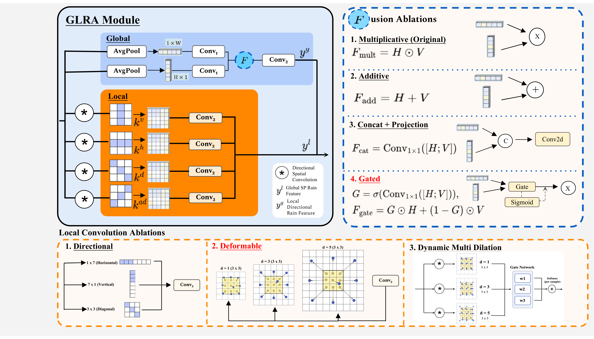
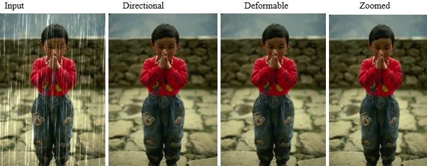
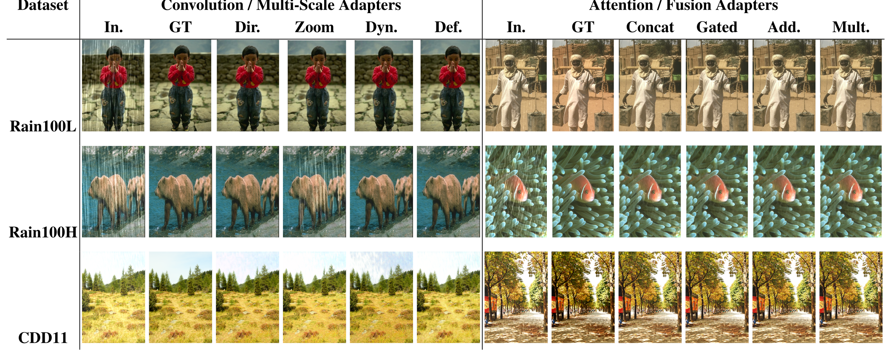

Frozen-Backbone Adaptation: An Empirical Study of Component Substitution in a Pretrained Deraining Network
Overview
Adapting a pretrained restoration network to a new design usually means retraining the whole model. We study Frozen-Backbone Adaptation (FBA): one recurring component of a pretrained deraining network is replaced, and only the new component is trained while the rest of the backbone stays frozen.
We use RAINet (2.7M parameters, 20 Image Decomposition Blocks) as the backbone and substitute the local and global pathways of its GLRA module with convolutional adapters (directional, deformable, dynamic multi-dilation and the multi-scale ZoomGLRA), fusion adapters (multiplicative, additive, concatenation and gated) and attention adapters (channel attention, self-attention and Swin-style window attention). With 77K to 307K trainable parameters, the directional, deformable and dynamic adapters improve on the fully trained RAINet on Rain100L. We also compare adapting GLRA with adapting the DCMLP module, and test zero-shot transfer and target-domain adaptation on Rain100H and CDD11.
Method

The GLRA module of RAINet and the adapters substituted into it: fusion of the global pathway (top right) and convolutions of the local pathway (bottom). Only the substituted adapter is trained.
Results
Rain100L, PSNR and SSIM on the Y channel.
| Method | Trainable params | PSNR ↑ | SSIM ↑ | LPIPS ↓ |
|---|---|---|---|---|
| RAINet (fully trained) | 2.7M | 37.850 | 0.9796 | 0.01627 |
| ZoomGLRA | 96K | 36.648 | 0.9773 | 0.01072 |
| Directional | 77K | 38.987 | 0.9828 | 0.01252 |
| Dynamic | 307K | 39.043 | 0.9831 | 0.01210 |
| Deformable | 219K | 39.052 | 0.9831 | 0.01261 |
Examples

A Rain100L input and the outputs of the directional, deformable and ZoomGLRA adapters.

Rainy input, ground truth and adapter outputs on Rain100L, Rain100H and CDD11, for the convolutional and multi-scale adapters (left) and the fusion adapters (right).
BibTeX
@inproceedings{udoete2027frozen,
title = {Frozen-Backbone Adaptation: An Empirical Study of Component Substitution in a Pretrained Deraining Network},
author = {Udoete, Toyiomfon and Khan, Alisha and Roy, Sudipa and Njoku, Judith Nkechinyere and Shukla, Diksha},
booktitle = {Proceedings of the IEEE/CVF Winter Conference on Applications of Computer Vision (WACV) Workshops},
year = {2027}
}